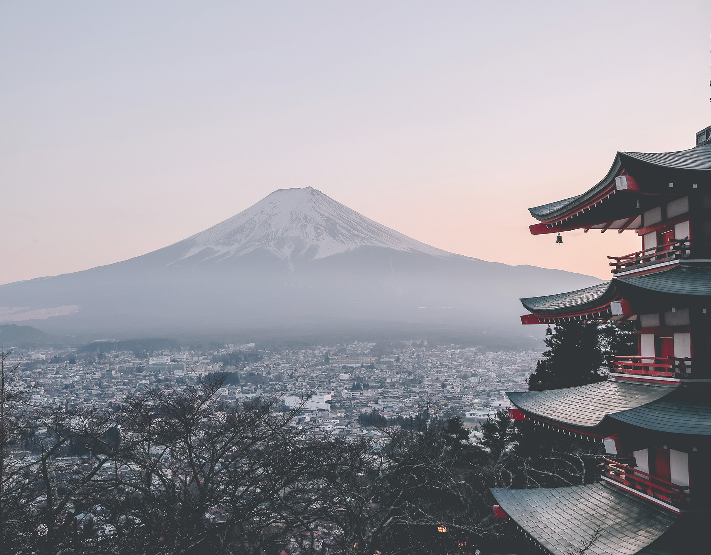
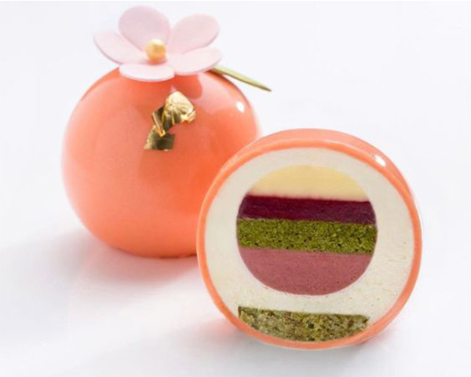
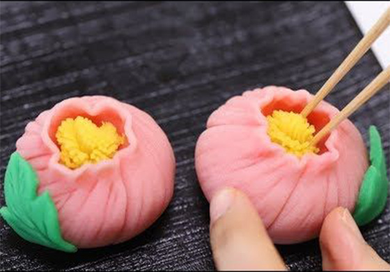
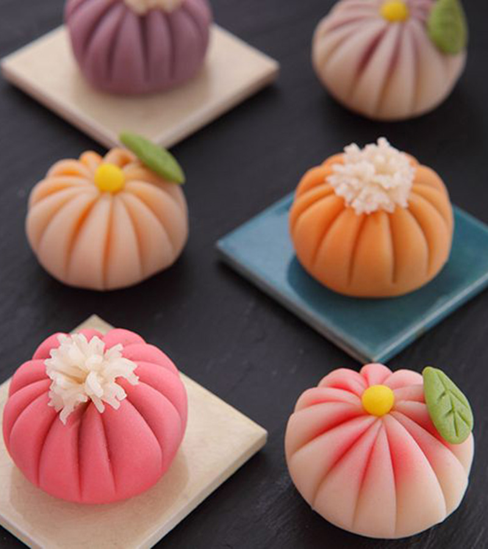
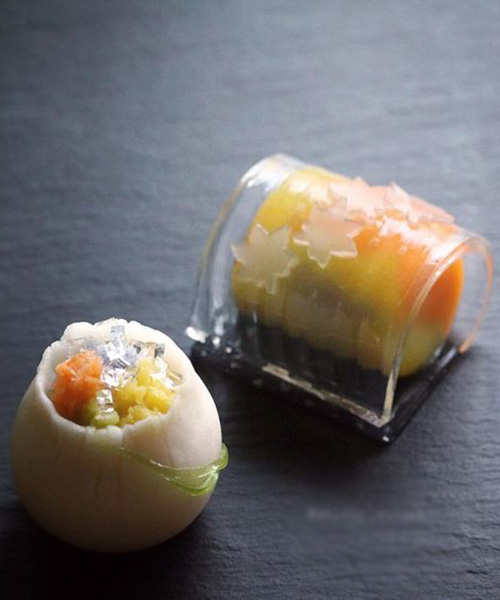
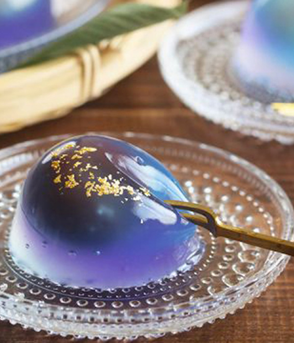
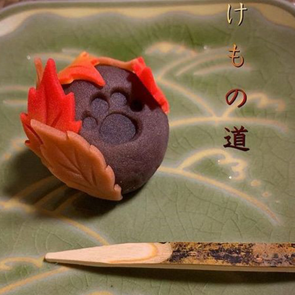

Bánh ngọt truyền thống Wagashi
Wagashi vốn là nét văn hóa ẩm thực truyền thống và rất lâu đời ở Nhật Bản. Đây là tên gọi chung cho các loại bánh ngọt được làm chủ yếu từ bột gạo và thường được sử dụng ăn kèm trong các buổi tiệc trà của người Nhật. Mặc dù có rất nhiều loại Wagashi khác nhau, nhưng điểm chung nhất của các món bánh này là đều được trình bày rất đẹp mắt nên người Nhật lẫn các nước trên thế giới không chỉ đơn thuần xem đây là một món ăn mà còn là một đỉnh cao nghệ thuật độc đáo.
Khi nói về Wagashi thì người Nhật thường nghĩ đến "nghệ thuật của 5 giác quan" bởi từng chiếc bánh Wagashi được tạo ra đều có khả năng đánh thức 5 giác quan của người thưởng thức. Ngược lại, nếu muốn cảm nhận hết vị ngon tinh tế của món bánh truyền thống Wagashi thì người ăn cũng phải sử dụng hết các giác quan của mình như thị giác (nhìn ngắm), thính giác (nghe tên gọi), xúc giác (sờ cảm nhận), khướu giác (ngửi mùi hương), vị giác (ăn và cảm nhận).




Wagashi có tên Tiếng Hán là “Hòa quả Tử”, tức vẻ đẹp của tự nhiên. Do đó mỗi chiếc wagashi đều được ví như một tiểu vũ trụ tổng hòa những yếu tố tươi đẹp trong đất trời: Bột bánh thường được nhuộm màu theo các mùa trong năm, hình dạng bánh đa dạng tương ứng với các hình ảnh thiên nhiên (hoa anh đào, hoa mơ, lá phong, bông tuyết…) và đặc biệt là nhân bánh từ đậu đỏ tượng trưng cho con người đứng ở trung tâm.
Nghệ thuật
Bánh Wagashi mang ý nghĩa vẻ đẹp tự nhiên nên mỗi chiếc bánh đều được tỉ mỉ trang trí theo cảm hứng từ cây cỏ và hoa lá. Với ý nghĩa triết học phương Đông sâu sắc ẩn trong từng món ăn nhỏ bé, Wagashi trở thành một nghệ thuật ẩm thực đặc trưng và đáng tự hào của người Nhật.
Tỉ mỉ
Xem thêm


